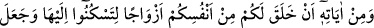
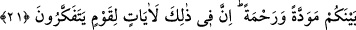
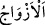
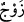
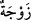

21. Kaynaşmanız için size kendi (cinsi)nizden eşler yaratıp aranızda sevgi ve
merhamet peydâ etmesi de O’nun (varlığının) delillerindendir. Doğrusu bunda, iyi
düşünen bir kavim için ibretler vardır.
“Kaynaşmanız için” yâni eşlerinize meyletmeniz ve onlarla ülfet kurmanız için,
demektir. Çünkü muhâlefet/farklılık ayrılma ve nefret sebeplerinden olduğu gibi
hemcinslik birleşme ve tanışma sebeblerindendir.
Her cins kendi cinsiyle uyumludur;
Hiç kimse hemcinsinden utanmaz
Her cins kendi cinsine meyleder, muhabbet besler;
Melek melekle, insan da insan ile
“Size” sizin için “kendi (cinsi)nizden” kendi vücûdunuzdan “eşler” kadınlar ve çiftler
“yaratıp” daha önceden tanışma, yakınlık ve akrabalık olmadığı halde eşlerinizle
“aranızda sevgi” muhabbet “ve merhamet” şefkat “peydâ etmesi de” yeniden
diriltmeye ve ondan sonra amellerin karşılığının verilmesine delâlet eden “O’nun
delillerindendir.” Eşlerinizin aslı olan Havvâ’nın Âdem (a.s.)’ın kaburga kemiğinden
yaratılması, eşlerinizin kendinizden yaratılmaları anlamı taşır.
“__WORD__ kelimesi, “__WORD__ kelimesinin çoğuludur. Arkadaşına eşlik eden, erkek ve
dişiden beraber olanlardan herbiri demektir. “__WORD__ kelimesi ise fasih bir kullanım
değildir. Çoğulu “__WORD__tır. Nitekim el-Müfredât’ta böyle geçmektedir.
“Kendinizden” ifâdesinin anlamının ‘başka bir cinsten değil sizin cinsinizden’
şeklinde olması da câizdir. “Kaynaşmanız/sükûn bulmanız” sözüne en uygun olan da
budur.
Fakîr (Bursevî) der ki: “Fâkihlerden ve başkalarından bâzı âlimler, cinlerle insanlar
arasında evlenme ve cinsî münâsebet olabileceği görüşündedirler. Bu durumda Allah
başka cinslerden eşler yaratmış olmaz mı?” diye sorulacak olursa bunun cevabı
şöyledir: Bu, nâdir olan durumlardandır. Onun için dikkate alınmaz. Cinlerden olan bir
kadın her ne kadar insan sûretine girebilse de onunla kaynaşıp ülfet etmek, insanlardan
olan bir kadın ile kaynaşıp ülfet etmek gibi değildir.
Hasan Basrî’nin şöyle dediği nakledilmiştir: “Âyetteki “sevgi” cinsî münâsebetten,
“merhamet” ise çocuktan kinâyedir. Nitekim Allah Teâlâ Îsa (a.s.) hakkında (annesine)
“kendimizden bir rahmet” (Meryem, 19/21) buyurmuştur.